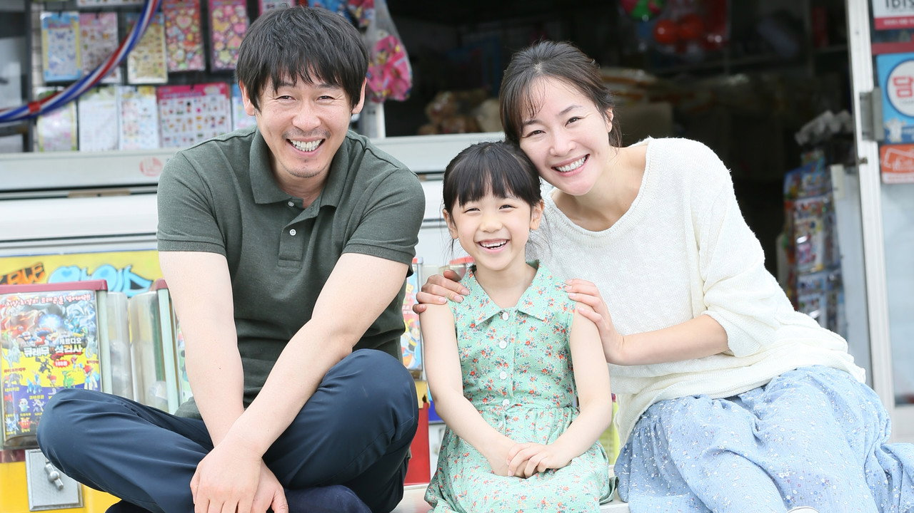

素媛
Hope / 소원 (2013) · 導演：李濬益 · 主演：薛景求、嚴志媛、李甄
「最孤獨的人最親切，最難過的人笑得最燦爛，因為他們不想看見其他人受同樣的苦。」
★ 多維度深度評析
綜合評析指數：9.3 / 10這部作品極度適合你，如果：
- 渴望感受世間最純粹笨拙的深沉父愛與家庭牽絆
- 關注性侵創傷修復、兒童心理復健與社會人情微光者
- 能直面真實沉重悲劇、期望從極致痛苦中汲取重生勇氣的觀眾
觀看前請做好心理準備，如果：
- 改編自真實重大慘案（趙斗淳事件），前半段創傷情節極其沉重揪心
- 淚點極低或近期情緒較為低落者，強烈建議避免單獨深夜觀看
無雷簡介與觀影指引
在一個飄著微雨的清晨，小學女生素媛（李甄 飾）如常撐著傘走在上學的路上，卻不幸遭遇了極其殘暴的侵害，身心遭受了難以逆轉的毀滅性摧殘。當父親東勳（薛景求 飾）與母親美熙（嚴志媛 飾）在醫院看見奄奄一息的女兒時，整個原本溫馨平靜的家庭瞬間墜入深不見底的絕望深淵。
面對漫長的醫療復健、社會輿論的窺探與法律制度的無力，導演李濬益並未耽溺於剝削受害者的血腥與仇恨，而是將筆觸聚焦於「創傷之後的漫長療癒」。鄰里的默默守護、心理醫生的耐心引導，以及父親為了讓心生恐懼的女兒重新展露笑顏，笨拙穿上巨大布偶裝的默默陪伴，共同交織出一曲在人間至暗時刻綻放的生命希望之歌。
⚠️
深度劇情剖析與結局探討（含重大劇透）
點擊以展開完整解析：含人偶服背後的沉默父愛、法庭對質與新生希望
▼
深度劇情剖析與結局探討（含重大劇透）
點擊以展開完整解析：含人偶服背後的沉默父愛、法庭對質與新生希望
#1 可可蒙布偶服：天下最笨拙也最偉大的父愛
創傷後的素媛對所有成年男性產生了嚴重的排斥與恐懼，甚至連親生父親靠近都會引發劇烈的生理顫抖。為了不給女兒壓力，薛景求飾演的父親選擇穿上女兒最喜歡的「可可蒙」（Cocomong）卡通人偶裝。在酷熱難耐的天氣裡，汗流浹背的父親笨拙地搖晃身體、默默走在放學的女兒身後。當素媛主動為滿頭大汗的布偶拉開拉鍊、伸手擦去父親臉上的汗水時，無聲的淚水崩潰化作了全片最催淚的人性高光。
#2 司法體系的冰冷缺憾與鄰里社群的溫暖修復
電影無比真實地批判了司法體系在面對醉酒藉口時的荒謬判決（僅判刑 12 年），也展現了法庭取證時對受害幼童的二次傷害。但不同於純粹發洩復仇怒火的犯罪片，《素媛》將鏡頭轉向了工廠同事籌款、街坊鄰居悄悄貼在文具店上的加油便利貼、以及小玩伴榮植默默守護素媛的童真。正是這些微弱卻真實的人性微光，承托住了即將瓦解的一家人。
#3 弟弟的降生與紙飛機：傷口長出的堅韌生命力
在結尾，新生的弟弟降臨人間，素媛站在嬰兒床前輕輕對弟弟說：「你能出生在這個世界上，真是太好了。」這句話呼應了她曾在筆記本上寫下的沉痛疑問——「為什麼我會出生在世界上？」經歷了人間最殘酷的暴行，素媛終於在愛與守護中找到了與世界和解的微光，折成紙飛機的過往向著藍天飛去，為這部令人心碎的作品注入了永恆的生命力量。